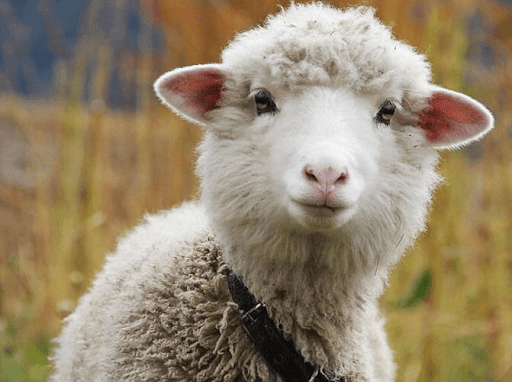

Harry Potter
and the Philosopher's Stone
chapter one
the boy who lived
Mr and Mrs Dursley, of number four, Privet Drive, were proud to say that they were perfectly normal, thank you very much. They were the last people you’d expect to be involved in anything strange or mysterious, because they just didn’t hold with such nonsense.
Mr Dursley was the director of a firm called Grunnings, which made drills. He was a big, beefy man with hardly any neck, although he did have a very large moustache. Mrs Dursley was thin and blonde and had nearly twice the usual amount of neck, which came in very useful as she spent so much of her time craning over garden fences, spying on the neighbours. The Dursleys had a small son called Dudley and in their opinion there was no finer boy anywhere.
The Dursleys had everything they wanted, but they also had a secret, and their greatest fear was that somebody would discover it. They didn’t think they could bear it if anyone found out about the Potters. Mrs Potter was Mrs Dursley’s sister, but they hadn’t met for several years; in fact, Mrs Dursley pretended she didn’t have a sister, because her sister and her good-for-nothing husband were as unDursleyish as it was possible to be. The Dursleys shuddered to think what the neighbours would say if the Potters arrived in the street. The Dursleys knew that the Potters had a small son, too, but they had never even seen him. This boy was another good reason for keeping the Potters away; they didn’t want Dudley mixing with a child like that.
When Mr and Mrs Dursley woke up on the dull, grey Tuesday our story starts, there was nothing about the cloudy sky outside to suggest that strange and mysterious things would soon be happening all over the country. Mr Dursley hummed as he picked out his most boring tie for work and Mrs Dursley gossiped away happily as she wrestled a screaming Dudley into his high chair.
None of them noticed a large tawny owl flutter past the window.
At half past eight, Mr Dursley picked up his briefcase, pecked Mrs Dursley on the cheek and tried to kiss Dudley goodbye but missed, because Dudley was now having a tantrum and throwing his cereal at the walls. ‘Little tyke,’ chortled Mr Dursley as he left the house. He got into his car and backed out of number four’s drive.....
Овцы заставили Роналду сменить место жительства в Англии
Футболисту Роналду пришлось сменить дом в Англии из-за овец
МОСКВА, 16 сентября/ Радио Sputnik. Португальский футболист Криштиану Роналду сменил место жительства в Англии менее чем через неделю после переезда из-за "шумных" овец, сообщил таблоид The Sun.
По данным издания, в начале сентября он вместе с семьей переехал в английский Манчестер, однако найти покой футболисту не удалось.
По утрам Роналду мешал шум от пасущихся недалеко от его особняка овец. Другой причиной переезда стали проблемы с безопасностью. Дело в том, что рядом с земельным участком проходит общественная пешеходная дорожка, с которой можно было посмотреть, что происходит во дворе дома звезды футбола.
Криштиану Роналду выступал за "Манчестер Юнайтед" с 2003 по 2009 год. Затем он перешел в "Реал Мадрид", после – в "Ювентус". Этим летом футболист снова вернулся в английский клуб.
 Через неделю после новоселья Криштиану Роналду переехал из особняка под Манчестером за £ 6 млн в дом за £ 3 млн. Как пояснил футболист - подальше от овец, которые каждое утро слишком шумно паслись поблизости.